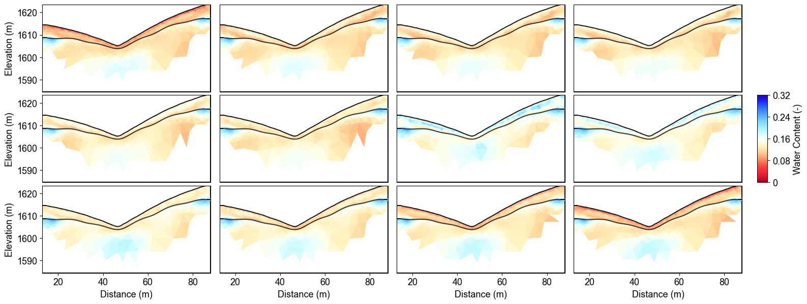
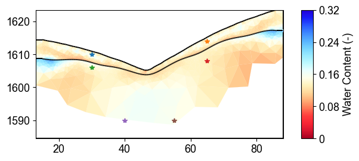
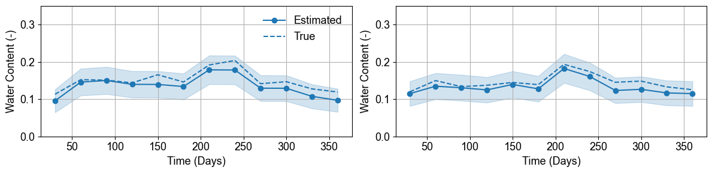
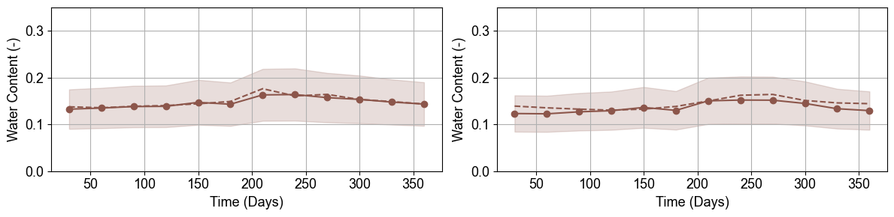
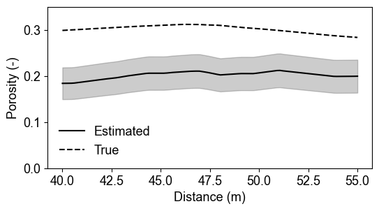
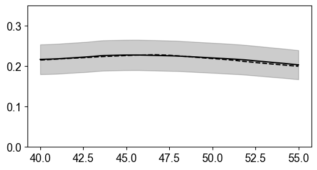

Note
Go to the end to download the full example code.
Ex. Monte Carlo Uncertainty Quantification for Hydrologyic Properties Estimation#
This example demonstrates Monte Carlo uncertainty quantification for converting ERT resistivity models to water content estimates.
The analysis includes: 1. Loading inverted resistivity models from time-lapse ERT 2. Defining parameter distributions for different geological layers 3. Monte Carlo sampling of petrophysical parameters 4. Probabilistic water content estimation with uncertainty bounds 5. Statistical analysis and visualization of results 6. Time series extraction with confidence intervals 7. Eastimate the porosity in satuatd zone
Uncertainty quantification is essential for reliable hydrological interpretation of geophysical data, providing confidence bounds on water content estimates and identifying regions of high/low certainty.
from typing import Any
sphinx_gallery_thumbnail_path = ‘auto_examples/images/Ex_MC_Hydro_fig_01.png’
import os
import sys
import matplotlib.pyplot as plt
import numpy as np
import pygimli as pg
from tqdm import tqdm
# Setup package path for development
try:
# For regular Python scripts
current_dir = os.path.dirname(os.path.abspath(__file__))
except NameError:
# For Jupyter notebooks
current_dir = os.getcwd()
# Add the parent directory to Python path
parent_dir = os.path.dirname(current_dir)
if parent_dir not in sys.path:
sys.path.append(parent_dir)
structure_output_dir = os.path.join(current_dir, "results", "Structure_WC")
time_lapse_dataset_dir = os.path.join(current_dir, "data", "TL_measurements")
# Import PyHydroGeophysX modules
from PyHydroGeophysX.petrophysics.resistivity_models import resistivity_to_saturation
### MC sampling for paramters
# Extract the inverted resistivity values
resistivity_values = np.load(os.path.join(structure_output_dir, "resmodel.npy"))
coverage = np.load(os.path.join(structure_output_dir, "all_coverage.npy"))
# Extract cell markers from the mesh (to identify different geological layers)
cell_markers = np.load(os.path.join(structure_output_dir, "index_marker.npy"))
mesh = pg.load(os.path.join(structure_output_dir, "mesh_res.bms"))
# Number of Monte Carlo realizations
n_realizations = 100
random_generator = np.random.default_rng(2026)
# Set up parameter distributions (means and standard deviations)
# Updated to use rock physics parameters instead of saturated resistivity
# Layer 1 (top layer - marker 3) - Regolith/Soil
layer1_dist = {
'm': {'mean': 1.3, 'std': 0.1}, # Cementation exponent (lower for unconsolidated)
'n': {'mean': 2.1, 'std': 0.1}, # Saturation exponent
'sigma_sur': {'mean': 1/200, 'std': 1/200}, # Surface conductivity (S/m)
'porosity': {'mean': 0.42, 'std': 0.05}, # Porosity
}
# Layer 2 (bottom layer - marker 2) - Fractured/Fresh Bedrock
layer2_dist = {
'm': {'mean': 1.9, 'std': 0.2}, # Cementation exponent (higher for consolidated)
'n': {'mean': 1.7, 'std': 0.2}, # Saturation exponent
'porosity': {'mean': 0.25, 'std': 0.15}, # Porosity (lower in bedrock)
}
# Create arrays to store all MC realization results
water_content_all = np.zeros((n_realizations, *resistivity_values.shape))
Saturation_all = np.zeros((n_realizations, *resistivity_values.shape))
# Create arrays to store the parameters used for each realization
params_used = {
'layer1': {
'm': np.zeros(n_realizations),
'rho_fluid': np.zeros(n_realizations),
'n': np.zeros(n_realizations),
'sigma_sur': np.zeros(n_realizations),
'porosity': np.zeros(n_realizations),
},
'layer2': {
'm': np.zeros(n_realizations),
'rho_fluid': np.zeros(n_realizations),
'n': np.zeros(n_realizations),
'sigma_sur': np.zeros(n_realizations),
'porosity': np.zeros(n_realizations),
}
}
# Perform Monte Carlo simulation
print("Starting Monte Carlo simulation...")
for mc_idx in tqdm(range(n_realizations), desc="MC Realizations"):
# Sample parameters for each layer from their distributions
# Layer 1 (Top layer - Regolith/Soil)
layer1_params = {
'm': max(0.0, random_generator.normal(layer1_dist['m']['mean'], layer1_dist['m']['std'])),
'rho_fluid': 20,
'n': max(0.0, random_generator.normal(layer1_dist['n']['mean'], layer1_dist['n']['std'])),
'sigma_sur': max(0.0, random_generator.normal(layer1_dist['sigma_sur']['mean'], layer1_dist['sigma_sur']['std'])),
'porosity': max(0.0, random_generator.normal(layer1_dist['porosity']['mean'], layer1_dist['porosity']['std'])),
}
# Layer 2 (Bottom layer - Bedrock)
layer2_params = {
'm': max(0.0, random_generator.normal(layer2_dist['m']['mean'], layer2_dist['m']['std'])),
'rho_fluid': 20,
'n': max(0.0, random_generator.normal(layer2_dist['n']['mean'], layer2_dist['n']['std'])),
'sigma_sur': 0.0, # Minimal surface conductivity in bedrock,
'porosity': max(0.0, random_generator.normal(layer2_dist['porosity']['mean'], layer2_dist['porosity']['std'])),
}
# Save the parameters used for this realization
params_used['layer1']['m'][mc_idx] = layer1_params['m']
params_used['layer1']['rho_fluid'][mc_idx] = layer1_params['rho_fluid']
params_used['layer1']['n'][mc_idx] = layer1_params['n']
params_used['layer1']['sigma_sur'][mc_idx] = layer1_params['sigma_sur']
params_used['layer1']['porosity'][mc_idx] = layer1_params['porosity']
params_used['layer2']['m'][mc_idx] = layer2_params['m']
params_used['layer2']['rho_fluid'][mc_idx] = layer2_params['rho_fluid']
params_used['layer2']['n'][mc_idx] = layer2_params['n']
params_used['layer2']['sigma_sur'][mc_idx] = layer2_params['sigma_sur']
params_used['layer2']['porosity'][mc_idx] = layer2_params['porosity']
# Create arrays to store water content and saturation for this realization
water_content = np.zeros_like(resistivity_values)
saturation = np.zeros_like(resistivity_values)
# Create porosity array for all cells
porosity = np.zeros_like(cell_markers, dtype=float)
porosity[cell_markers == 3] = layer1_params['porosity'] # Top layer porosity
porosity[cell_markers == 2] = layer2_params['porosity'] # Bottom layer porosity
# Process each timestep
for t in range(resistivity_values.shape[1]):
# Extract resistivity for this timestep
resistivity_t = resistivity_values[:, t]
# Process each layer separately using the NEW resistivity_to_saturation function
# Layer 1 (marker 3) - Top layer
mask_layer1 = cell_markers == 3
if np.any(mask_layer1):
saturation[mask_layer1, t] = resistivity_to_saturation(
resistivity=resistivity_t[mask_layer1],
porosity=layer1_params['porosity'],
m=layer1_params['m'],
rho_fluid=layer1_params['rho_fluid'],
n=layer1_params['n'],
sigma_sur=layer1_params['sigma_sur'],
)
# Layer 2 (marker 2) - Bottom layer
mask_layer2 = cell_markers == 2
if np.any(mask_layer2):
saturation[mask_layer2, t] = resistivity_to_saturation(
resistivity=resistivity_t[mask_layer2],
porosity=layer2_params['porosity'],
m=layer2_params['m'],
rho_fluid=layer2_params['rho_fluid'],
n=layer2_params['n'],
sigma_sur=layer2_params['sigma_sur'],
)
# Convert saturation to water content (water_content = saturation * porosity)
water_content[:, t] = saturation[:, t] * porosity
# Store this realization's water content and saturation
water_content_all[mc_idx] = water_content
Saturation_all[mc_idx] = saturation
print("Monte Carlo simulation completed!")
# Calculate statistics across all realizations
print("Calculating statistics...")
water_content_mean = np.mean(water_content_all, axis=0)
water_content_std = np.std(water_content_all, axis=0)
water_content_p10 = np.percentile(water_content_all, 10, axis=0) # 10th percentile
water_content_p50 = np.percentile(water_content_all, 50, axis=0) # Median
water_content_p90 = np.percentile(water_content_all, 90, axis=0) # 90th percentile
print("Statistics calculation completed!")
# Print some summary statistics
print(f"\nSummary Statistics:")
print(f"Layer 1 (Regolith) - Mean porosity: {np.mean(params_used['layer1']['porosity']):.3f} ± {np.std(params_used['layer1']['porosity']):.3f}")
print(f"Layer 1 - Mean m: {np.mean(params_used['layer1']['m']):.3f} ± {np.std(params_used['layer1']['m']):.3f}")
print(f"Layer 1 - Mean rho_fluid: {np.mean(params_used['layer1']['rho_fluid']):.1f} ± {np.std(params_used['layer1']['rho_fluid']):.1f} ohm m")
print(f"\nLayer 2 (Bedrock) - Mean porosity: {np.mean(params_used['layer2']['porosity']):.3f} ± {np.std(params_used['layer2']['porosity']):.3f}")
print(f"Layer 2 - Mean m: {np.mean(params_used['layer2']['m']):.3f} ± {np.std(params_used['layer2']['m']):.3f}")
print(f"Layer 2 - Mean rho_fluid: {np.mean(params_used['layer2']['rho_fluid']):.1f} ± {np.std(params_used['layer2']['rho_fluid']):.1f} ohm m")
print(f"\nWater content range: {np.min(water_content_mean):.4f} - {np.max(water_content_mean):.4f}")
print(f"Mean uncertainty (std): {np.mean(water_content_std):.4f}")
### Plot the water content distribution
import matplotlib.pylab as pylab
import matplotlib.pyplot as plt
import numpy as np
from palettable.lightbartlein.diverging import BlueDarkRed18_18_r
params = {'legend.fontsize': 13,
#'figure.figsize': (15, 5),
'axes.labelsize': 13,
'axes.titlesize':13,
'xtick.labelsize':13,
'ytick.labelsize':13}
pylab.rcParams.update(params)
plt.rcParams["font.family"] = "Arial"
fixed_cmap = BlueDarkRed18_18_r.mpl_colormap
fig = plt.figure(figsize=[16, 6])
# Use tight_layout with adjusted parameters to reduce space
plt.subplots_adjust(wspace=0.05, hspace=0.05)
# True resistivity model
for i in range(12):
row, col = i // 4, i % 4
ax = fig.add_subplot(3, 4, i+1)
# Add common ylabel only to leftmost panels
ylabel = "Elevation (m)" if col == 0 else None
# Add resistivity label only to the middle-right panel (row 1, col 3)
resistivity_label = r' Resistivity ($\Omega$ m)' if (i == 7) else None
# Only show axis ticks on leftmost and bottom panels
if col != 0:
ax.set_yticks([])
if row != 2: # Not bottom row
ax.set_xticks([])
else:
# Add "distance (m)" label to bottom row panels
ax.set_xlabel("Distance (m)")
# Create the plot
ax, cbar = pg.show(mesh,
water_content_mean[:, i],
pad=0.3,
orientation="vertical",
cMap=fixed_cmap,
cMin=0,
cMax=0.32,
ylabel=ylabel,
label= 'Water Content (-)',
ax=ax,
logScale=False,
coverage=coverage[i,:]>-1.0)
# Only keep colorbar for the middle-right panel (row 1, col 3)
# This corresponds to panel index 7 in a 0-based indexing system
if i != 7: # Keep only the colorbar for panel 7
cbar.remove()
plt.tight_layout()
plt.savefig(os.path.join(structure_output_dir, "timelapse_sat.tiff"), dpi=300, bbox_inches='tight')
Time-Lapse Water Content with Uncertainty#
The Monte Carlo analysis reveals temporal water content evolution with quantified uncertainty bounds across 12 months. Spatial patterns show higher uncertainty in transition zones between geological layers, while temporal changes track seasonal hydrological processes with confidence intervals.
{kind=link}

%% [markdown] ### Extract the true water content values
monthly_days = np.arange(30, 361, 30)
water_content_true = np.load(
os.path.join(time_lapse_dataset_dir, "water_content_mesh.npy"),
mmap_mode="r",
)
WC_true = np.asarray(water_content_true[monthly_days])
mesh_true = pg.load(os.path.join(time_lapse_dataset_dir, "mesh.bms"))
print(WC_true.shape)
### Pick up the comparison locations
fig = plt.figure(figsize=[6, 3])
ax = fig.add_subplot(1, 1, 1)
ax, cbar = pg.show(mesh,
water_content_mean[:, 4],
pad=0.3,
orientation="vertical",
cMap=fixed_cmap,
cMin=0,
cMax=0.32,
ylabel=ylabel,
label= 'Water Content (-)',
ax=ax,
logScale=False,
coverage=coverage[6,:]>-1.2)
ax.plot([30],[1610],'*')
ax.plot([65],[1614],'*')
ax.plot([30],[1606],'*')
ax.plot([65],[1608],'*')
ax.plot([40],[1590],'*')
ax.plot([55],[1590],'*')
Monitoring Point Selection#
Six monitoring points selected across different geological layers and elevations for detailed uncertainty analysis. Points sample regolith (top 4 stars) and fractured bedrock (bottom 2 stars) to capture layer-specific uncertainty patterns in water content estimates.
{kind=link}

%% [markdown] ### Function for analyze the time-series data
Modified function to extract time series based on x AND y positions
def extract_mc_time_series(
mesh: Any,
values_all: Any,
positions: Any,
) -> Any:
"""
Extract Monte Carlo time series at specific x,y positions
Args:
mesh: PyGIMLI mesh
values_all: Array of all Monte Carlo realizations (n_realizations, n_cells, n_timesteps)
positions: List of (x,y) coordinate tuples
Returns:
time_series: Array of shape (n_positions, n_realizations, n_timesteps)
cell_indices: List of cell indices corresponding to the positions
"""
n_realizations = values_all.shape[0]
n_timesteps = values_all.shape[2]
# Find indices of cells closest to specified positions
cell_indices = []
for x_pos, y_pos in positions:
# Calculate distance from each cell center to the position
cell_centers = np.array(mesh.cellCenters())
distances = np.sqrt((cell_centers[:, 0] - x_pos)**2 + (cell_centers[:, 1] - y_pos)**2)
cell_idx = np.argmin(distances)
cell_indices.append(cell_idx)
# Extract time series for each realization and position
time_series = np.zeros((len(positions), n_realizations, n_timesteps))
for pos_idx, cell_idx in enumerate(cell_indices):
for mc_idx in range(n_realizations):
time_series[pos_idx, mc_idx, :] = values_all[mc_idx, cell_idx, :]
return time_series, cell_indices
def extract_true_values_at_positions(
mesh: Any,
true_values: Any,
positions: Any,
) -> Any:
"""
Extract true water content values at specific x,y positions.
Args:
mesh: PyGIMLI mesh
true_values: Array of true water content values (n_cells, n_timesteps) or (n_cells,)
positions: List of (x,y) coordinate tuples
Returns:
true_values_at_positions: Values at each position
cell_indices: List of cell indices corresponding to the positions
"""
# Find indices of cells closest to specified positions
cell_indices = []
for x_pos, y_pos in positions:
# Calculate distance from each cell center to the position
cell_centers = np.array(mesh.cellCenters())
distances = np.sqrt((cell_centers[:, 0] - x_pos)**2 + (cell_centers[:, 1] - y_pos)**2)
cell_idx = np.argmin(distances)
cell_indices.append(cell_idx)
# Extract true values at the specified positions
if true_values.ndim == 1: # Single value per cell
true_values_at_positions = true_values[cell_indices]
elif true_values.ndim == 2: # Time series per cell
true_values_at_positions = true_values[cell_indices, :]
else:
raise ValueError("Unexpected shape for true_values")
return true_values_at_positions, cell_indices
### Pick up the locations
# Define positions to sample (x,y coordinates)
positions = [
(30, 1610),
(65, 1613), # Example coordinates, adjust based on your model
]
# Extract time series data for these positions
time_series_data, cell_indices = extract_mc_time_series(mesh, water_content_all, positions)
Pos1_true, _ = extract_true_values_at_positions(mesh_true, WC_true.T, positions)
Pos1_true
### Comparisons of water content
Plot time series with uncertainty bands
plt.figure(figsize=(12, 3))
measurement_times = np.arange(30,361,30) # Assuming sequential timesteps
# Calculate statistics
mean_ts = np.mean(time_series_data[0], axis=0)
std_ts = np.std(time_series_data[0], axis=0)
plt.subplot(1, 2, 1)
plt.plot(measurement_times, mean_ts, 'o-', color='tab:blue', label='Estimated')
plt.fill_between(measurement_times, mean_ts-std_ts, mean_ts+std_ts, color='tab:blue', alpha=0.2)
plt.plot(measurement_times,Pos1_true[0, :], 'tab:blue',ls='--', label='True')
plt.grid(True)
plt.legend(frameon=False)
plt.xlabel('Time (Days)')
plt.ylabel('Water Content (-)')
plt.ylim(0, 0.35)
plt.subplot(1, 2, 2)
mean_ts = np.mean(time_series_data[1], axis=0)
std_ts = np.std(time_series_data[1], axis=0)
plt.plot(measurement_times, mean_ts, 'o-', color='tab:blue',)
plt.fill_between(measurement_times, mean_ts-std_ts, mean_ts+std_ts, color='tab:blue', alpha=0.2)
plt.plot(measurement_times,Pos1_true[1, :], 'tab:blue',ls='--')
plt.xlabel('Time (Days)')
plt.ylabel('Water Content (-)')
plt.ylim(0, 0.35)
# plt.legend()
plt.grid(True)
plt.tight_layout()
plt.savefig(os.path.join(structure_output_dir, "regolith_WC.tiff"), dpi=300, bbox_inches='tight')
- Regolith Layer Water Content Uncertainty
Time series at regolith monitoring points show excellent agreement between estimated (solid lines) and true (dashed lines) water content. Uncertainty bands (shaded areas) capture parameter variability while maintaining reasonable confidence intervals for practical applications.

%%
{kind=link}
## Fractured bedrock layer
# Define positions to sample (x,y coordinates)
positions = [
(30, 1606), # Example coordinates, adjust based on your model
(65, 1608),
]
# Extract time series data for these positions
time_series_data2, cell_indices = extract_mc_time_series(mesh, water_content_all, positions)
Pos2_true, _ = extract_true_values_at_positions(mesh_true, WC_true.T, positions)
Pos2_true
Plot time series with uncertainty bands
plt.figure(figsize=(12, 3))
measurement_times = np.arange(30,361,30) # Assuming sequential timesteps
# Calculate statistics
mean_ts = np.mean(time_series_data2[0], axis=0)
std_ts = np.std(time_series_data2[0], axis=0)
plt.subplot(1, 2, 1)
plt.plot(measurement_times, mean_ts, 'o-', color='tab:brown', label='Estimated')
plt.fill_between(measurement_times, mean_ts-std_ts, mean_ts+std_ts, color='tab:brown', alpha=0.2)
plt.plot(measurement_times,Pos2_true[0, :], 'tab:brown',ls='--', label='True')
plt.grid(True)
#plt.legend(frameon=False)
plt.xlabel('Time (Days)')
plt.ylabel('Water Content (-)')
plt.ylim(0, 0.35)
plt.subplot(1, 2, 2)
mean_ts = np.mean(time_series_data2[1], axis=0)
std_ts = np.std(time_series_data2[1], axis=0)
plt.plot(measurement_times, mean_ts, 'o-', color='tab:brown',)
plt.fill_between(measurement_times, mean_ts-std_ts, mean_ts+std_ts, color='tab:brown', alpha=0.2)
plt.plot(measurement_times,Pos2_true[1, :], 'tab:brown',ls='--')
plt.xlabel('Time (Days)')
plt.ylabel('Water Content (-)')
plt.ylim(0, 0.35)
# plt.legend()
plt.grid(True)
plt.tight_layout()
plt.savefig(os.path.join(structure_output_dir, "Fracture_WC.tiff"), dpi=300, bbox_inches='tight')
Fractured Bedrock Water Content Uncertainty#
Fractured bedrock monitoring points exhibit lower water content and different uncertainty patterns compared to regolith. The broader uncertainty bands reflect higher parameter variability in consolidated materials and reduced ERT sensitivity in low-porosity environments.
{kind=link}

%% [markdown] ### Estimate Porosity
If we know the water table and then use it to estimate the porosity
# Import PyHydroGeophysX modules
from PyHydroGeophysX.petrophysics.resistivity_models import resistivity_to_porosity
# Extract the inverted resistivity values
resistivity_values = np.load(os.path.join(structure_output_dir, "resmodel.npy"))
coverage = np.load(os.path.join(structure_output_dir, "all_coverage.npy"))
# Extract cell markers from the mesh (to identify different geological layers)
cell_markers = np.load(os.path.join(structure_output_dir, "index_marker.npy"))
mesh = pg.load(os.path.join(structure_output_dir, "mesh_res.bms"))
# Number of Monte Carlo realizations
n_realizations = 100
# Assume full saturation under the water table
saturation_value = 1.0
# Set up parameter distributions (means and standard deviations)
# For porosity estimation from resistivity with known saturation
# Layer 1 (top layer - marker 3) - Regolith/Soil
layer1_dist = {
'm': {'mean': 1.3, 'std': 0.1}, # Cementation exponent (lower for unconsolidated)
'n': {'mean': 2.1, 'std': 0.1}, # Saturation exponent
'sigma_sur': {'mean': 1/200, 'std': 1/200}, # Surface conductivity (S/m)
}
# Layer 2 (bottom layer - marker 2) - Fractured/Fresh Bedrock
layer2_dist = {
'm': {'mean': 1.9, 'std': 0.2}, # Cementation exponent (higher for consolidated)
'n': {'mean': 1.7, 'std': 0.2}, # Saturation exponent
'sigma_sur': {'mean': 0.0, 'std': 0.0}, # No surface conductivity in bedrock
}
# Create arrays to store all MC realization results
porosity_all = np.zeros((n_realizations, *resistivity_values.shape))
water_content_all = np.zeros((n_realizations, *resistivity_values.shape)) # Since saturation = 1, WC = porosity
# Create arrays to store the parameters used for each realization
params_used = {
'layer1': {
'm': np.zeros(n_realizations),
'rho_fluid': np.zeros(n_realizations),
'n': np.zeros(n_realizations),
'sigma_sur': np.zeros(n_realizations),
},
'layer2': {
'm': np.zeros(n_realizations),
'rho_fluid': np.zeros(n_realizations),
'n': np.zeros(n_realizations),
'sigma_sur': np.zeros(n_realizations),
}
}
# Perform Monte Carlo simulation
print("Starting Monte Carlo simulation for porosity estimation...")
print(f"Assuming full saturation (S = {saturation_value}) everywhere")
for mc_idx in tqdm(range(n_realizations), desc="MC Realizations"):
# Sample parameters for each layer from their distributions
# Layer 1 (Top layer - Regolith/Soil)
layer1_params = {
'm': max(0.0, random_generator.normal(layer1_dist['m']['mean'], layer1_dist['m']['std'])),
'rho_fluid': 20,
'n': max(0.0, random_generator.normal(layer1_dist['n']['mean'], layer1_dist['n']['std'])),
'sigma_sur': max(0.0, random_generator.normal(layer1_dist['sigma_sur']['mean'], layer1_dist['sigma_sur']['std'])),
}
# Layer 2 (Bottom layer - Bedrock)
layer2_params = {
'm': max(0.0, random_generator.normal(layer2_dist['m']['mean'], layer2_dist['m']['std'])),
'rho_fluid': 20,
'n': max(0.0, random_generator.normal(layer2_dist['n']['mean'], layer2_dist['n']['std'])),
'sigma_sur': 0,
}
# Save the parameters used for this realization
params_used['layer1']['m'][mc_idx] = layer1_params['m']
params_used['layer1']['rho_fluid'][mc_idx] = layer1_params['rho_fluid']
params_used['layer1']['n'][mc_idx] = layer1_params['n']
params_used['layer1']['sigma_sur'][mc_idx] = layer1_params['sigma_sur']
params_used['layer2']['m'][mc_idx] = layer2_params['m']
params_used['layer2']['rho_fluid'][mc_idx] = layer2_params['rho_fluid']
params_used['layer2']['n'][mc_idx] = layer2_params['n']
params_used['layer2']['sigma_sur'][mc_idx] = layer2_params['sigma_sur']
# Create arrays to store porosity for this realization
porosity = np.zeros_like(resistivity_values)
# Process each timestep
for t in range(resistivity_values.shape[1]):
# Extract resistivity for this timestep
resistivity_t = resistivity_values[:, t]
# Process each layer separately using resistivity_to_porosity function
# Layer 1 (marker 3) - Top layer
mask_layer1 = cell_markers == 3
if np.any(mask_layer1):
porosity[mask_layer1, t] = resistivity_to_porosity(
resistivity=resistivity_t[mask_layer1],
saturation=saturation_value, # Full saturation
m=layer1_params['m'],
rho_fluid=layer1_params['rho_fluid'],
n=layer1_params['n'],
sigma_sur=layer1_params['sigma_sur'],
a=1.0 # Fixed tortuosity
)
# Layer 2 (marker 2) - Bottom layer
mask_layer2 = cell_markers == 2
if np.any(mask_layer2):
porosity[mask_layer2, t] = resistivity_to_porosity(
resistivity=resistivity_t[mask_layer2],
saturation=saturation_value, # Full saturation
m=layer2_params['m'],
rho_fluid=layer2_params['rho_fluid'],
n=layer2_params['n'],
sigma_sur=layer2_params['sigma_sur'],
a=1.0 # Fixed tortuosity for bedrock
)
# Store this realization's porosity
porosity_all[mc_idx] = porosity
# Since saturation = 1, water content = porosity
water_content_all[mc_idx] = porosity
print("Monte Carlo simulation completed!")
# Calculate statistics across all realizations
print("Calculating statistics...")
porosity_mean = np.mean(porosity_all, axis=0)
porosity_std = np.std(porosity_all, axis=0)
### Unsaturated zone comparison
from scipy.interpolate import griddata
porosity_true = np.load(os.path.join(time_lapse_dataset_dir, "porosity_mesh.npy"))
mesh_centers = np.array(mesh_true.cellCenters())
x1, y1 = np.mgrid[40:55:100j, 1600:1600:1j]
po_1 = griddata(mesh_centers[:,0:2], porosity_true, (x1, y1), method='linear')
mesh_centers2 = np.array(mesh.cellCenters())
po_2 = griddata(mesh_centers2[:,0:2], porosity_mean[:,10], (x1, y1), method='linear')
std_2 = griddata(mesh_centers2[:,0:2], porosity_std[:,10], (x1, y1), method='linear')
fig = plt.figure(figsize=[6, 3])
plt.plot(x1,po_2,c='k',label='Estimated')
plt.fill_between(x1.ravel(),po_2.ravel()-std_2.ravel(), po_2.ravel()+std_2.ravel(), color='k', alpha=0.2)
plt.plot(x1,po_1,c='k',ls='--',label='True')
plt.ylim(0, 0.35)
plt.xlabel('Distance (m)')
plt.ylabel('Porosity (-)')
plt.legend(frameon=False)
Unsaturated Zone Porosity Estimation#
Cross-sectional porosity comparison in unsaturated zone (y=1600m) shows good agreement between estimated (solid) and true (dashed) values. Uncertainty bands reflect parameter variability in petrophysical relationships for partially saturated conditions.
{kind=link}

%% [markdown] ### Saturated zone comparison
from scipy.interpolate import griddata
porosity_true = np.load(os.path.join(time_lapse_dataset_dir, "porosity_mesh.npy"))
mesh_centers = np.array(mesh_true.cellCenters())
x1, y1 = np.mgrid[40:55:100j, 1590:1590:1j]
po_1 = griddata(mesh_centers[:,0:2], porosity_true, (x1, y1), method='linear')
mesh_centers2 = np.array(mesh.cellCenters())
po_2 = griddata(mesh_centers2[:,0:2], porosity_mean[:,10], (x1, y1), method='linear')
std_2 = griddata(mesh_centers2[:,0:2], porosity_std[:,10], (x1, y1), method='linear')
fig = plt.figure(figsize=[6, 3])
plt.plot(x1,po_1,c='k',ls='--',label='True')
plt.plot(x1,po_2, c='k',label='Estimated')
plt.fill_between(x1.ravel(),po_2.ravel()-std_2.ravel(), po_2.ravel()+std_2.ravel(), color='k', alpha=0.2)
plt.ylim(0, 0.35)
Saturated Zone Porosity Validation#
Saturated zone porosity estimates (y=1590m) demonstrate excellent recovery with narrow uncertainty bounds. Full saturation assumption provides strong constraints, reducing parameter uncertainty and improving estimation reliability compared to partially saturated conditions.
{kind=link}

%%
Summary#
This Monte Carlo analysis successfully quantified uncertainty in water content and porosity estimates from ERT data. Key findings include layer-specific uncertainty patterns, temporal monitoring with confidence bounds, and enhanced reliability in saturated zones. The probabilistic framework provides essential uncertainty information for water resource management decisions.